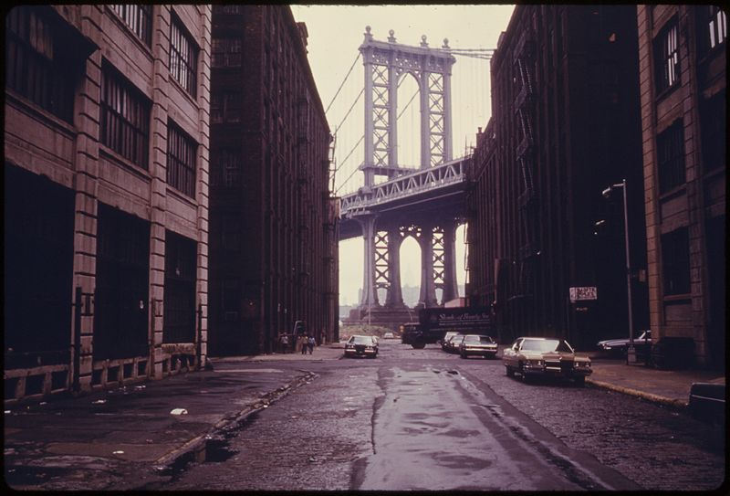
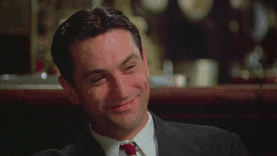
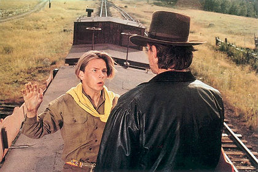
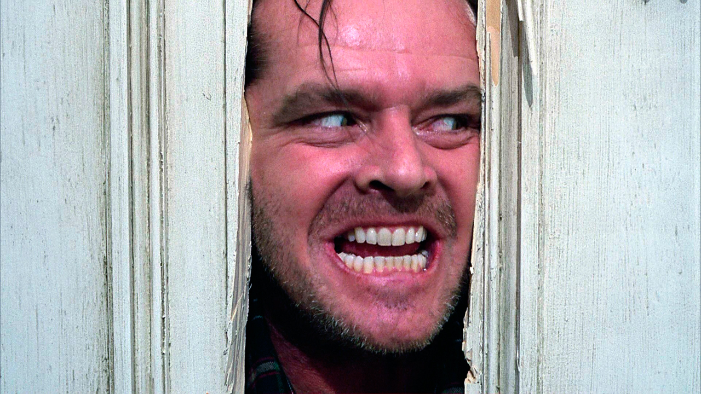
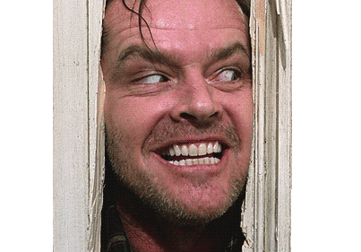

Hello Students of batch 197! Ancien ingénieur dans l'industrie, marre de l'usine. Tentative de reconversion dans l'informatique ...!!!
Mes films préférés...
|  |
Il etait une fois en AmériqueIl était une fois deux truands juifs, Max et Noodles, liés par un pacte d'éternelle amitié. Débutant au début du siècle par de fructueux trafics dans le ghetto de New York, ils voient leurs chemins se séparer, lorsque Noodles se retrouve durant quelques années derrière les barreaux, puis se recouper en pleine période de prohibition, dans les années vingt. Jusqu'au jour où la trahison les sépare à nouveau. |

|
Indiana Jones et la dernière croisadeL'archéologue aventurier Indiana Jones se retrouve aux prises avec un maléfique milliardaire. Aux côtés de la cupide Elsa et de son père, il part à la recherche du Graal. |
|  |
ShiningJack Torrance, gardien d'un hôtel fermé l'hiver, sa femme et son fils Danny s'apprêtent à vivre de longs mois de solitude. Danny, qui possède un don de médium, le "Shining", est effrayé à l'idée d'habiter ce lieu, théâtre marqué par de terribles évènements passés... |